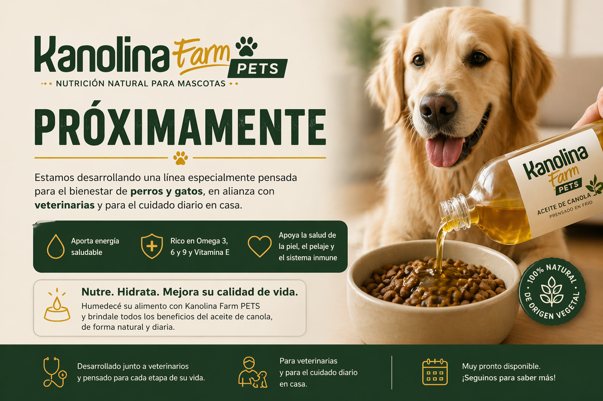

Nueva línea Kanolina Farm PETS
Próximamente
Estamos desarrollando una línea pensada para el bienestar de perros y gatos, con nutrición natural para el cuidado diario en casa.
Quiero recibir novedades
Nueva línea Kanolina Farm PETS
Estamos desarrollando una línea pensada para el bienestar de perros y gatos, con nutrición natural para el cuidado diario en casa.
Quiero recibir novedades